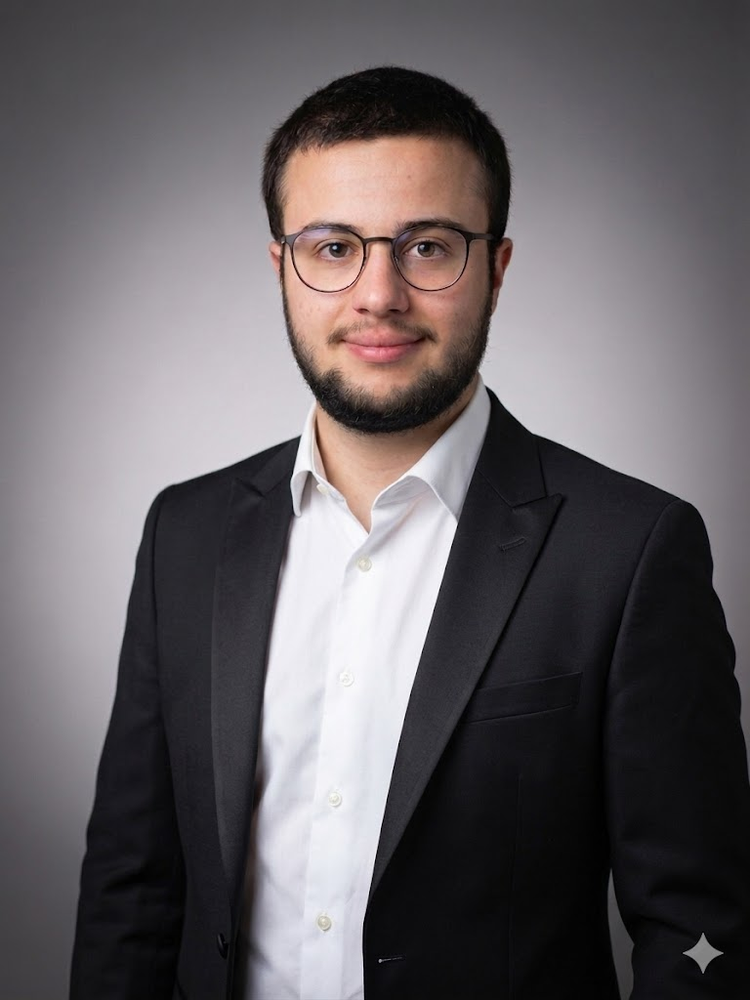

👤 Qui suis-je ?

Je m'appelle Baptiste Konopka et je suis actuellement étudiant en BTS Services Informatiques aux Organisations (option SISR - Solutions d'Infrastructure, Systèmes et Réseaux).
Passionné par l'informatique et plus particulièrement par les infrastructures réseau, je suis en alternance chez LOGIN Informatique à Cambrai, où j'applique mes connaissances théoriques sur des projets concrets.
🎓 Mon parcours
Après l'obtention de mon Baccalauréat professionnel Systèmes Numériques, j'ai décidé de poursuivre mes études en BTS SIO option SISR afin d'approfondir mes connaissances en infrastructure, systèmes et réseaux.
Cette formation me permet d'acquérir des compétences techniques solides dans :
• La gestion et la maintenance des infrastructures réseau
• L'administration de systèmes (Windows Server, Linux)
• La virtualisation et les services cloud
• La sécurité informatique et la supervision réseau
• Le support technique et l'assistance aux utilisateurs
🎯 Mon projet professionnel
Après l'obtention de mon BTS SIO option SISR, je souhaite entrer directement sur le marché du travail afin d'apprendre encore plus sur le terrain et de développer davantage mes connaissances pratiques.
Mon objectif est de devenir administrateur systèmes et réseaux. Ce choix me permettra de mettre en pratique mes compétences acquises en formation tout en continuant à évoluer au contact de professionnels expérimentés, en gérant des infrastructures réelles et en relevant des défis techniques concrets.
💻 Compétences principales
Systèmes d'exploitation :
• Windows Server (Active Directory, GPO, DHCP, DNS)
• Linux (Debian, Ubuntu, administration système)
• Virtualisation (VMware, VirtualBox, Hyper-V)
Réseaux :
• Configuration et administration de routeurs et switchs
• Protocoles réseau (TCP/IP, VLAN, VPN)
• Adressage IP et sous-réseaux
• Diagnostic et dépannage réseau
Sécurité :
• Pare-feu et filtrage réseau
• Sauvegardes et plan de reprise d'activité
• Sensibilisation à la cybersécurité
✨ Qualités personnelles
Autonomie : Capable de travailler de manière indépendante sur des projets techniques complexes.
Rigueur : Attention particulière aux détails et respect des procédures de sécurité.
Curiosité : Veille technologique constante et envie d'apprendre de nouvelles technologies.
Esprit d'équipe : Bonne communication et collaboration avec les différents services de l'entreprise.